“对我来说，最重要的是弄清楚公司周围有多大的护城河。当然，我喜欢的是一座大大的城堡，环绕着一条有食人鱼和鳄鱼的护城河。”——沃伦·巴菲特
可持续的价值创造是那些希望预期修正的投资者的首要兴趣所在。
可持续的价值创造有两个维度：一家公司投资资本回报和资本成本之间差距的大小，以及这一差距能保持为正的时间。
行业的影响对于绩效出色的可持续性最为重要，在绩效出色出现中紧随其后。然而，对于绩效低下者来说，行业的影响远小于企业特定因素。对于低于平均水平的公司，战略和资源可以解释其90%或更多的回报。
行业是开始分析可持续的价值创造的正确切入点。我们建议了解市场的格局，包括了解参与者及其相互影响的方式、分析利润池，以及评估行业稳定性。在此之后，我们分析了五力模型，并讨论了颠覆性创新框架。
清楚地了解公司如何创造股东价值是理解可持续的价值创造的核心。我们定义了三大价值创造的来源：生产优势、消费者优势和外部优势。
公司之间如何相互影响在塑造可持续的价值创造中起着至关重要的作用。我们通过博弈论、合作竞争和共同进化来思考相互作用。
1、竞争生命周期
创新。年轻的公司通常会意识到投资回报的迅速增长和巨大的投资机会。在生命周期的这个阶段，大量（公司）进入和退出该行业非常常见。
回报下降。高回报吸引竞争，通常导致经济回报向资本成本靠拢。在这个阶段，公司仍然赚取超额回报，但回报曲线是下降的。投资需求也在放缓，进入和退出的速度也在放缓。
成熟。在这个阶段，公司竞争趋向于达到均衡状态。因此，公司获得的投资回报与行业平均水平相当，而行业内的竞争确保了总回报不会更高。投资需求继续放缓。
低于标准。竞争力量和技术变革会使回报低于资本成本，这就要求公司进行重组。这些公司可以通过剥离资产、改变商业模式、降低投资水平或出售自己来提高回报。或者，这些公司可以申请破产重组或清算公司的资产。
*在管理层的控制下经营企业有很多方面，包括选择要竞争的产品市场、定价、投资支出和总体执行。我们把这些称之为技能。企业的某些方面也超出了管理层的控制范围，例如宏观经济发展、客户反应和技术变革。我们把这些叫做运气。每当运气有助于结果时，就会有向平均值回归的趋势。
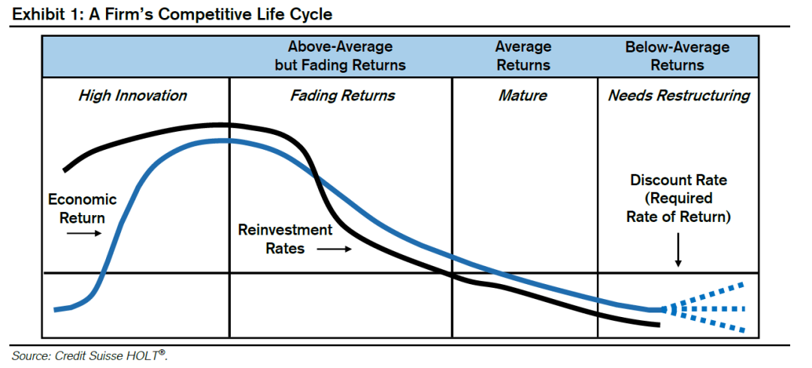
公司和投资者将竞争战略分析用于两个截然不同的目的。公司试图创造高于资本成本的回报，而投资者则试图判断出预期的修正。如果一家公司的股价已经反映了其可持续价值创造的前景，那么投资者就应该预期获得经风险调整后的市场回报。但是，如果公司创造价值的周期比市场预期的要长，在波动性低于预期的情况下，会产生超额回报。
我们将花大部分时间来理解企业如何以及为什么在产品市场上实现可持续的价值创造。但我们不应忽视这样一个事实，即我们作为投资者的目标是判断预期的修正。图3展示了这个过程，并强调了这一目标，即发现和利用期望与现实的错配。
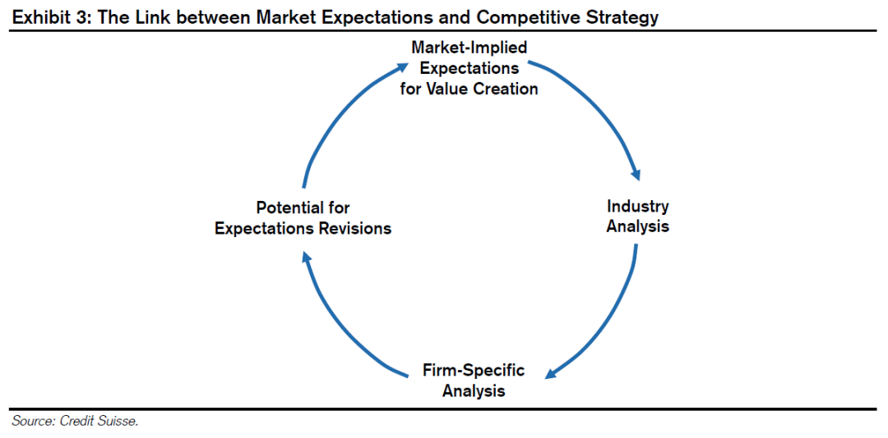
是什么决定了公司的命运？
核心观点是，即使是最好的行业也存在着价值毁灭的公司，而最差的行业也有创造价值的公司。由于一些公司违背了其所在行业的经济效益规律，我们借此可以洞察经济效益的潜在来源。行业无法决定公司的宿命。
在高回报的行业里找到一家公司，或者在低回报的行业里规避一家公司是不够的。要想找到一个能够持续良好表现的好公司，就需要对行业和公司的条件有透彻的了解。
阿妮塔·麦加汉（Anita McGahan）和迈克尔·波特（Michael Porter）是两位著名的商业战略学者，分析了1981-1994年间美国企业大约58000个公司年度的观察结果。他们评估了四个因素对可持续性和异常盈利能力的影响：
年度。不同的年份产生的影响源于其决定了所处的经济周期。你可以把它看作是影响经济中所有企业的宏观经济因素。
行业。行业影响是指作为特定行业的一部分对企业绩效的影响。如果某个行业存在着有吸引力的结构，包括很高的进入壁垒，那么企业可能会从行业影响中获益。
母公司。当一家多元化企业的业务平均表现低于或优于其所在行业时，就会出现“母公司效应”。例如，母公司效应对塔可钟(Taco Bell)是积极的，该公司在上世纪80年代被百事公司(PepsiCo)收购后盈利能力有所改善。
细分特征。这种效应抓住了一个公司所独有的特征，这些特征推动了其相对于同一行业内竞争对手的表现。这些特征可能包括公司的资源、定位，或者其管理者执行战略的效率。
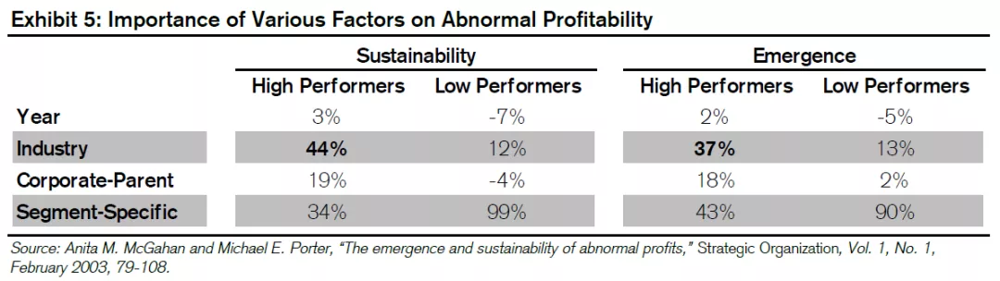
他们发现，行业因素在绩效好的公司的可持续性中最为重要，在高绩效的出现方面紧随其后，仅次于细分市场效应。然而，对于绩效较差的公司而言，行业因素远小于细分特征的影响。表现低于平均水平的公司的战略和资源可以解释其90%或更多的回报，无论是可持续性还是异常盈利的出现。寻找新兴或持续竞争优势的企业经理和分析师可能也会注意到，经济周期对业绩的可持续性或异常盈利的出现并不重要。
我们将行业分析分成三个部分：
1) 行业地图
创建行业地图是开始竞争分析的一个有用的方法。行业地图应包括所有可能对公司盈利能力产生影响的公司和其他构成要素。行业地图的目标是了解当前和潜在的相互作用，这些相互作用最终塑造了整个行业以及行业内单个公司的可持续价值创造前景。
从行业的角度来看，你可以想到三种类型的互动：供应商（获得投入所需要付出的成本）、客户（有人愿意为商品或服务支付多少钱）和外部（其他起作用的因素，如政府行为）。
在绘制行业地图时，请记住以下几点：
①按主导地位的顺序列出公司，通常定义为规模或市场份额；
②考虑潜在的新进入者和现有的参与者；
③了解公司之间经济互动的本质（例如激励措施、付款条件）；
④评估可能影响盈利能力的任何其他因素（如劳动力、法规）。
金融学教授劳伦·科恩（Lauren Cohen）和安德烈·弗拉齐尼（Andrea Frazzini）的一项研究表明，投资者可能会从密切关注行业地图中获益。研究人员研究了一家公司受到的冲击是如何通过供求关系波及到其他公司的。他们测试了市场是否充分地将一家公司发布的信息反映到其合作公司的股价中。他们发现，投资者未能充分吸收这些信息，从而形成了一种有利可图的交易策略。
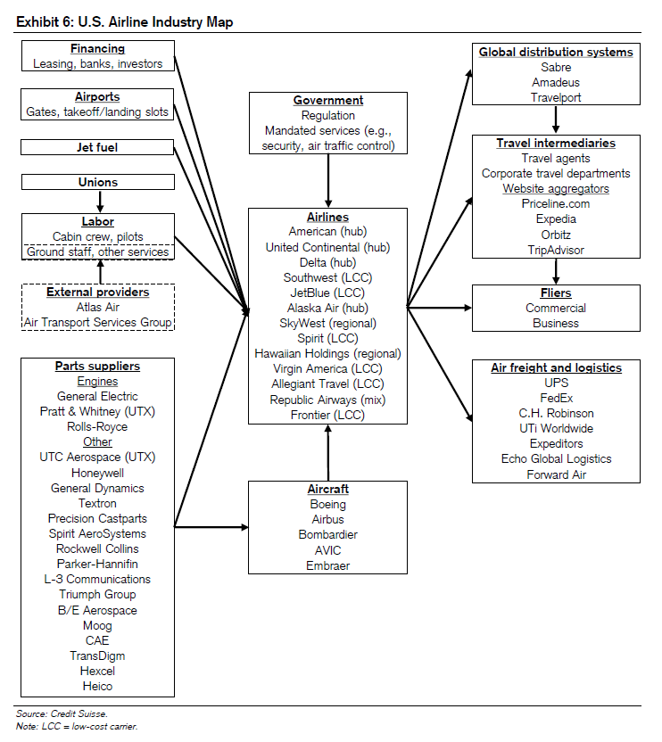
2) 利润池
构建利润池。利润池显示了一个行业在某个时间点创造的价值的分布情况。横轴衡量规模，通常是投资资本或销售额占行业的百分比，纵轴衡量经济盈利能力（例如，CFROI减去折现率）。
3) 行业稳定性
行业稳定性是另一个重要指标。一般来说，稳定的产业更有利于可持续的价值创造。不稳定的行业带来了巨大的竞争挑战和机遇。不稳定行业的价值迁移大于稳定行业的价值迁移，使得可持续的价值创造变得更加难以实现。
我们可以用几种方法来衡量行业的稳定性。
一个简单但有用的指标是市场份额的稳定性。这种分析着眼于行业内所有公司在一段时期内市场份额的变化绝对值，（我们通常用五年时间）。然后我们把变化绝对值加总，再除以公司数量。市场份额的变化绝对值平均数越低，行业就越稳定。
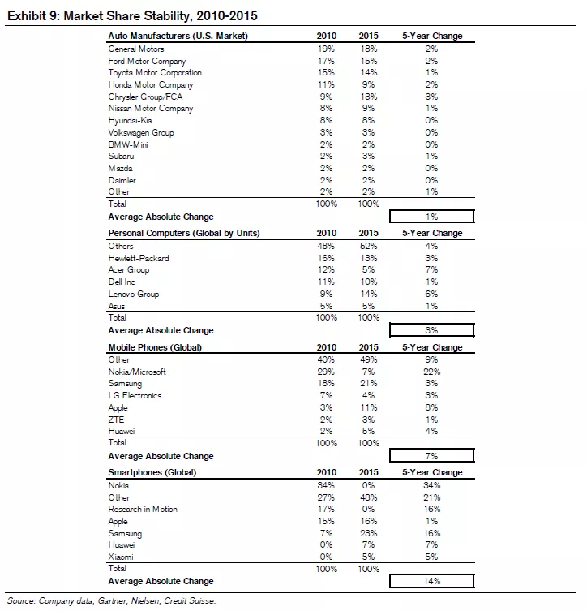
另一种衡量行业稳定性的方法是定价趋势。价格变化反映了一系列因素，包括成本结构（固定与可变）、进入和退出动态、宏观经济变量、技术变化（如摩尔定律和赖特定律）以及竞争。在其他条件相同的情况下，更稳定的价格反映出更稳定的行业。巴菲特尤为强调定价权。他说：“在评估一个企业时，最重要的一个因素就是定价权。如果你有能力在不把生意输给竞争对手的情况下提价，你的生意就很好。如果你要在提价10%之前进行祈祷，那么你的生意就糟透了。”
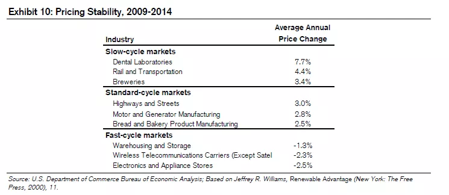
4) 行业分类
在使用五力框架进行行业分析之前，对所分析的行业进行分类是很有用的。无论该行业属于哪一类，分析过程都是一样的。但是分类确实提供了指导，告诉你在分析过程中需要强调什么问题。例如，一个成熟的行业所面临的挑战可能与一个新兴行业所面临的挑战截然不同。图11提供了一些广泛的分类以及应该与它们关联的机会类型。
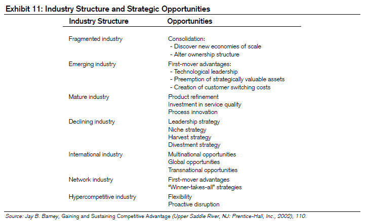
了解你所分析的特定行业的进入和退出历史也是很重要的。根据该行业在其生命周期中的位置以及该行业的进入和退出壁垒，进入和退出速度的差别很大。
研究表明，新兴行业的企业数量遵循着一致的路径。
在行业发展的早期阶段，市场对所青睐的产品不确定，这就鼓励了小型、灵活的企业进入行业并进行创新。随着行业的成熟，市场确定了产品，需求趋于稳定。老公司受益于规模经济和根深蒂固的优势，导致高退出率和走向稳定的寡头垄断。
波特建议使用行业分析来理解“竞争的基础和盈利的根本原因”。波特认为，这五种力量的总和决定了一个行业创造价值的潜力。但该行业并不能决定公司的命运。单个公司可以通过抵御竞争力量并将其塑造为自己的优势，从而实现比行业平均水平更高的盈利能力。
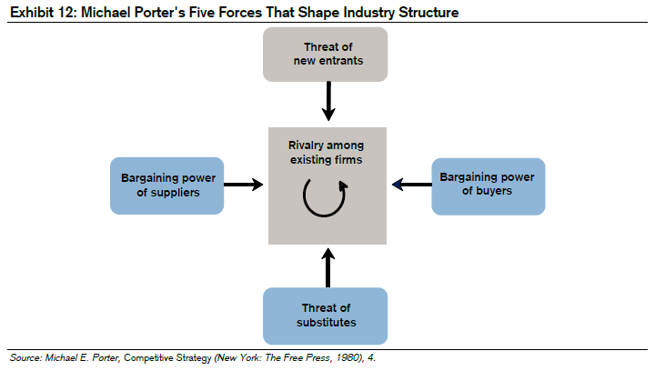
供应商力量是指供应商在价格、质量和服务等方面与客户之间的影响力。一个无法将来自于强大供应商那里的涨价压力转嫁的行业，注定没有吸引力。如果供应商比他们的下游客户更为集中、如果替代产品不会产生影响、或者产品有很高的转换成本，那么供应商就处于有利地位。如果他们所服务的行业在销售额中所占比例相对较小，或者产品对客户而言至关重要，他们也处于有利地位。客户买家集中、数量很少要比客户分散更让供应商头疼。
客户力量是指产品或服务的购买者的讨价还价能力。它是客户集中度、转换成本、信息水平、替代产品以及产品对客户重要性的总和。与不知情、分散的客户相比，信息灵通的大客户对他们的供应商有更大的影响力。
替代威胁涉及替代产品或服务的存在，以及潜在客户转向替代产品的可能性。如果一个企业的价格不具竞争力，如果竞争对手有可比产品，企业就会面临替代威胁。替代产品限制了公司可以收取的价格，为潜在回报设置了上限。
新进入者的威胁，或进入壁垒，可以说是波特五力中最重要的。在我们深入研究决定进入壁垒的因素之前，有必要回顾一下关于进入和退出的实证研究。
每个行业的退出和进入速度之间存在很强的相关性。例如，制造业的进入和退出速度较低，而建筑业的进入和退出速度非常高，说明制造业具有更强的进入和退出壁垒。
总结DRS结果的一个有用方法：
①退出和进入将无处不在。
②进入和退出的公司往往比现存公司的规模小。
③不同行业的进入和退出速度差别很大。
④大多数进入者无法生存10年，但那些成功活下来的进入者却欣欣向荣。
其他研究也同样发现，新公司的生存机会很低。瑞士信贷HOLT的研究表明，只有不到50%的上市公司能活过十年。我们对BDS数据的分析也显示了低存活率。图15显示了机构基于建立年份的1年和5年生存率。今天的生存率与1977年相似。最新数据显示，一年生存率约为80%，五年生存率约为50%。
首先是什么影响了挑战者进入的决定？
从广义上讲，潜在进入者权衡现任者的预期反应、预期回报和退出成本的大小。研究人员还发现，挑战者忽视了企业失败的可能性，从而导致过度自信。我们将逐一探讨这些因素。
让我们先看一下现有企业对潜在新进入者的反应。有四个具体因素可以预测现有企业的反应及程度：资产专用性、最低有效生产规模水平、过剩产能和在位声誉。
长期以来，经济学家认为，公司对市场的承诺与该在资产上的投资有关。更仔细的分析表明，重要的不是资产的数量，而是这些资产对市场的专用程度。一家公司如果拥有只在特定市场上才有价值的资产，将会为了维持其地位而奋力拼搏。
资产专用性有多种形式，包括场地专用性，即公司的资产在客户旁边以提高效率；物理专用性，即公司根据特定交易定制资产；专用资产，即公司收购资产以满足特定买家的需要；以及人的特殊性，即公司在这种情况下培养员工的技能、知识或专业方法。
如：一个清楚的例子是铁路和航空线路的对比。假设一家公司建造了一条从纽约到芝加哥的铁路。它只能将这些资产用于一件事：让火车在这两个城市之间来回。因此，该公司将不遗余力地保护自己的地位。现在考虑一家从纽约飞往芝加哥的航空公司。如果这条航线被证明不划算，航空公司可以将飞机改道至一个更有吸引力的目的地。
第二个因素是生产规模。对许多行业来说，单位成本随着产量的增加而下降，但这只会在一定程度上发生。这对于固定成本高的行业尤其重要。当单位成本随着产量的增加而下降时，企业就享有规模经济。然而，在某个时候单位成本会随着产量的增加而停止下降，企业会获得恒定的规模回报。最小有效生产规模是企业为了使单位成本最小化而必须生产的最小数量。
最低有效生产规模告诉潜在的进入者，它必须获得多少市场份额，才能使其商品具有竞争力的价格并获得利润。它还表明了进入者的前期资本投入的规模。当最低有效生产规模相对于整个市场的规模来说是很高的时候，潜在的进入者必须忍受在一段时间内将其产品定价低于平均成本以达到规模。成本曲线下降越陡，进入的可能性就越小。进入者试图抵消其生产成本劣势的主要方式是使其产品差异化，从而使其相对于行业内其他产品获得溢价。
如：最低有效规模通常与制造业相关，包括汽车和半导体制造厂。例如，英特尔生产第一台Xeon微处理器的成本超过100亿美元，包括制造厂和相关研发。但一旦芯片设计好，晶圆厂开始运转，生产芯片的成本就大幅下降。
最小有效规模的概念也适用于知识型企业，即一家公司以非常高的成本创建内容，然后将其复制到市场上。软件和硬件的成本曲线是一样的，在大多数情况下甚至更陡峭。
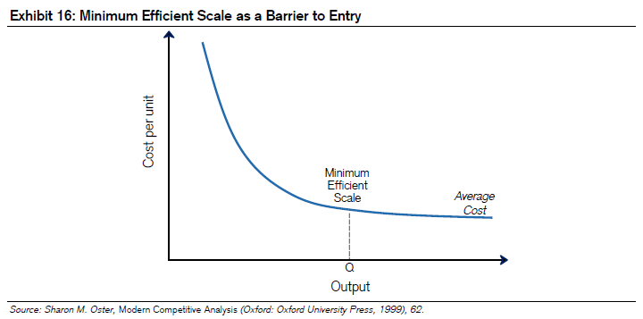
评估现有企业反应的第三个因素是产能过剩。这里的逻辑很简单。假设需求保持稳定，进入产能过剩行业的进入者会增加现有企业的过剩产能。如果该行业在生产上具有规模经济，那么现有企业的闲置产能成本就会上升。因此，现有企业有动力保持其市场份额。因此，新进入者的将引发价格下跌。这种前景阻碍了进入。
最后一个因素是现有企业声誉。随着时间的推移，企业通常会在不同的市场竞争。因此，他们获得了“随时准备为最小的挑衅而战”或“乐于助人”的名声。一个公司的声誉，背后有对应的行动，可以影响进入者的决定。
进入壁垒的另一个重要形成因素是进入者预期收益的大小。如果现有企业拥有不可克服的优势，那么进入者就不能确定自己能获得有吸引力的经济利润。现有企业的优势包括预先承诺合同、许可和专利、学习曲线和网络效应。
第一个优势是预先承诺合同。通常，公司通过签订长期合同来确保未来的业务。这些合同可以有效地降低供应商和客户的搜索成本。一个有合约的强势现有企业会阻碍进入。
预先承诺合同有多种形式。一个是现有企业是否能获得必要的原材料。第二次世界大战结束后不久就出现了这样一个例子。铝生产商美国铝业(Alcoa)与生产铝的一种重要原料——高品位铝土矿的所有生产商签订了独家合同。潜在进入者无法以如此优惠的条件获得铝土矿，使得进入这一行业变得非常困难。
另一种形式的预先承诺合同是与客户的长期交易。在20世纪80年代中期，孟山都(NutraSweet)和荷兰甜味剂公司是阿斯巴甜（甜味剂）的生产商。1987年阿斯巴甜的专利在欧洲到期后，荷兰甜味剂公司进入市场与孟山都展开竞争。竞争使阿斯巴甜的价格下降了60%，荷兰甜味剂公司赔钱了。
但荷兰甜味剂公司把目光投向了真正的战利品——美国市场，这项专利将于1992年在美国到期。在一个典型的预先承诺行动中，孟山都与阿斯巴甜的最大买家可口可乐和百事可乐签署了长期合同，负责供应阿斯巴甜，并有效地将荷兰甜味剂公司排除在美国市场之外。这给企业和投资者上了重要的一课：所有买家都希望拥有多个供应商，但这并不意味着他们会使用多个供应商。荷兰甜味剂公司为可口可乐和百事可乐创造了巨大的价值，却没有为自己创造价值。
预先承诺还包括准合同，例如承诺总是以最低的成本提供商品或服务。这样的承诺，如果可以执行，就会阻碍新进入者进入，因为新进入者很少有足够的规模与现有企业竞争。
许可和专利也会影响潜在进入者的回报，这是有道理的。许多行业需要政府的许可或证书才能开展业务。获取许可或证书的成本很高，因此为进入者设置了障碍。
专利也是一个重要的进入壁垒。但是专利与许可的内核是不同的。专利的目的是让创新者获得适当的投资回报。大多数创新都需要大量的前期成本。因此，一个自由市场体系需要一种补偿创新者的方法来鼓励他们的创新活动。专利不会阻碍创新，但它们确实会在有限的时间内阻止人们进入受保护的专利所在的行业。
学习曲线也可以作为进入的障碍。学习曲线作为累积经验的函数是指降低单位成本的能力。研究人员已经研究了数百种产品的学习曲线。数据显示，对于中等规模的企业来说，累计产量翻番可使单位成本降低约20%。一家公司可以享受学习曲线带来的好处，而不必考虑规模经济，反之亦然。但一般来说，这两者是相辅相成的。
网络效应是现有企业影响进入者收益的另一个重要优势。当一种商品或服务的价值随着使用该商品或服务的会员数量的增加而增加时，网络效应就会存在。举个例子，Uber之所以能吸引乘客，就是因为很多乘客和司机聚集在这个平台上。在一个特定的业务中，正反馈常常导致一个网络成为主导。例如，在美国，Uber不仅经受住了竞争的冲击，还巩固了自己的地位。规模、网络结构和连通性对网络强度有贡献。
如今，包括Facebook和Instagram在内的在线社交网络就是一个很好的例子，随着越来越多的人加入，它们对用户来说变得越来越有价值。我们还看到了智能手机市场上占主导地位的操作系统和应用程序开发者之间的网络效应。由于绝大多数用户拥有运行在Android或iOS上的设备，应用程序开发人员更有可能为他们开发应用程序，而不是为其他操作系统开发应用程序。这创造了一个强大的生态系统，让潜在进入者望而却步。
最后一点，与DRS对进入和退出的分析一致，是进入壁垒和退出壁垒之间的联系。高退出成本阻碍了进入。进入者需要的投资规模和资产的专用性决定了退出壁垒的高低。低投资需求和非特定资产与低进入壁垒相一致。
罗伯特·斯迈利（Robert Smiley）是一位专门研究竞争战略的退休经济学家，他调查了产品经理们阻止进入的策略。虽然他的分析仅限于消费品公司，但结果还是很有启发性的。（见图17）前三种策略，学习曲线、广告、研发/专利创造了较高的进入成本。最后三个，声誉、限制定价和产能过剩影响了对进入后收益的判断。几乎所有的管理者都报告说，他们使用这里面的一种或多种策略来阻止进入。
行为因素在企业决定进入某个业务的过程中也起着一定的作用。两位经济学家，科林·卡默尔（Colin Camerer）和丹·洛瓦洛（Dan Lovallo）设计了一个实验，以了解受试者为什么会进入游戏。当科学家告诉受试者回报是基于技能的时候，这些人高估了他们成功的概率。结果，他们进入游戏的比率比那些被告知收益是随机的人要高。大多数进入游戏的受试者认为，尽管所有进入游戏的受试者的总利润为负，但他们会获得正利润。
研究人员将受试者的过度自信归因于“参考组的忽视”。他们的观点是，受试者专注于他们认为自己独特的技能，而忽视了竞争对手的能力和参考组中新参赛者的高失败率。在我们所做的许多预测中，没有考虑到一个合适的参照体系。在商业世界，对开发新产品所需时间的长短、并购成功的可能性以及投资组合跑赢市场的可能性，忽视参考体系导致了不必要的乐观情绪。
2) 竞争对手
企业间的竞争是指企业之间在价格、服务、新产品介绍、促销和广告等方面竞争的激烈程度。在几乎所有行业中，这些领域的协调提高了企业的总体经济利润。例如，竞争对手通过协调定价来增加利润。当然，协调必须是心照不宣的，而不是直截了当的。
在大多数行业中，协调和欺骗之间存在着一种紧张关系。如果一家公司通过降低产品价格来“作弊”，那么如果其他公司不采取行动，这家公司就会赚取不成比例的利润。我们可以把竞争看作是理解，对每个公司来说，协调和欺骗之间的权衡。大量的协调意味着低竞争和有吸引力的经济回报。激烈的竞争使得公司很难产生高回报。
如果有很多的竞争者，协调是困难的。在这种情况下，每个公司都认为自己只是一个次要的参与者，更有可能从个体化的角度思考问题。自然地，另一方面表明，企业越少，协调的机会就越多。研究表明，大多数政府起诉的价格操纵案件涉及的行业，公司数量要少于平均水平。
集中度是衡量一个行业中企业数量和相对实力的常用方法。赫芬达尔-赫希曼指数(HHI)是估计行业集中度的常用方法。HHI不仅考虑企业数量，而且考虑企业规模的分布。在一个支离破碎的行业中占主导地位的公司可能对其他公司施加影响。在拥有几家规模相近的公司的行业中，竞争往往很激烈。
如果行业集中度是衡量竞争程度的可靠指标，那么你应该会看到集中度与盈利能力之间的某种联系。研究人员已经证明了这一点。两位金融学教授侯克伟（Kewei Hou）和大卫•罗宾逊（David Robinson）对1963年至2001年的行业进行了调查，发现集中度高的行业的利润高于平均水平，而不太集中的行业利润低于平均水平。
竞争的另一个影响是公司的同质性。在目标、激励计划、股权结构和公司理念相似的行业，竞争往往不那么激烈。但在许多情况下，竞争对手的目标截然不同。例如，一个行业的公司可能是公开上市的、私人持有的，或者是由私募股权拥有的。这些竞争对手可能有不同的财务目标、激励结构和时间期限。一个行业内的公司所追求的战略将反映出目标的异质性。
资产专用性在竞争中起着重要作用。特定资产会鼓励公司在条件变得艰难时也要留在这个行业，因为这些资产没有其他用途。资产包括有形资产，如铁路轨道，以及无形资产，如品牌。
需求的可变性决定了协调成本，因此对竞争产生了影响。当需求变化较大时，企业内部协调困难，与竞争对手有效协调的机会也很少。在固定成本较高的行业中，可变需求是一个特别重要的考虑因素。在这些行业，企业往往在需求高峰期增加过多的产能。虽然企业在高峰时利用了产能，但在低谷时产能过剩，并在周期底部引发更激烈的竞争。可变需求和高固定成本的状况描述了许多大宗商品行业，这就是为什么它们的竞争如此激烈，持续的正经济回报如此难以实现的原因。
行业增长是最后一个考虑因素。当潜在超额经济利润的蛋糕增长时，企业可以在不损害竞争对手的情况下创造股东价值。这场游戏不是零和游戏。相比之下，停滞不前的行业是零和游戏，增加价值的唯一途径就是从别人那里获取。因此，竞争的加剧往往伴随着行业增长率的下降。
3、破坏和瓦解
管理学教授克莱顿·克里斯滕森（Clayton Christensen）提出了一种理论来解释为什么大公司会失败，以及公司如何通过创新获得成功。他想知道为什么拥有大量资源和聪明管理团队的公司输给更简单、更便宜和劣质产品的公司是很常见的。他的颠覆性创新理论解释了这个过程。
他从持续创新和颠覆性创新的区分开始。持续创新促进产品改进。它们可以是渐进的、不连续的，甚至是激进的。但主要的一点是，持续创新是在一个既定的价值网络中运作的，即“一个公司识别并响应客户需求、解决问题、获取投入、对竞争对手作出反应、并努力盈利的环境”。
相比之下，颠覆性创新以不同的价值网络切入同一市场。以卖书为例，从夫妻书店到超级商店的演变是一个明显的创新，但价值网络是一样的。当亚马逊开始在线销售图书时，则引入了一个新的价值网络。破坏者为了获得超过资本成本的回报，通常会以较低的营业利润率换取较高的资本周转率。
他区分了两种类型的颠覆性创新：低端颠覆性创新和新市场颠覆性创新。低端颠覆者提供的产品已经存在。例如，当西南航空进入航空业时，它以非常低的成本提供了有限的航班，即没有任何装饰。西南航空无法，也没有能力，与大型传统航空公司竞争。
另一方面，新市场颠覆性创新最初是与“非消费”竞争。它吸引了那些以前由于缺乏资金或技术而没有购买或使用产品的客户。颠覆性创新的产品足够便宜或简单，足以让一个新群体拥有和使用。上世纪50年代引入的晶体管收音机就是新市场颠覆性创新的一个例子。索尼等制造商瞄准的是青少年，这一群体想要自己听音乐，但买不起台式收音机。青少年们非常兴奋可以远离父母听这些口袋大小的收音机，以至于忽略了静电和低劣的音质。
颠覆性创新最初吸引的客户相对较少，他们看重的是低价、小尺寸或更方便等特点。克里斯滕森发现，这些创新产品在短期内的表现一般不及现有产品，但对一部分市场来说已经足够好了。
图19展示了克里斯滕森的模型。横轴是时间，纵轴是产品性能。阴影区域代表客户的需求，并采取分布的形状，包括低端、中端和高端客户。
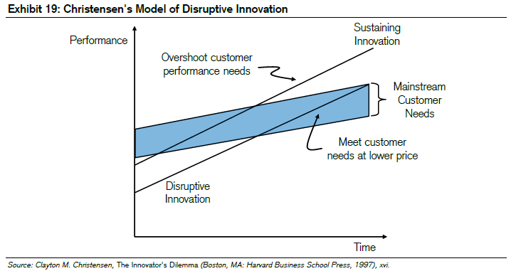
上面那根向上倾斜的线是持续创新的绩效轨迹。下面那条平行的、向上倾斜的线就是破坏性创新的绩效轨迹。
该模型的一个关键点是，创新的速度往往快于客户的需求。现有企业通过持续的技术，通常会向客户提供超出他们需要或超出他们最终愿意支付的东西。当创新持续推动技术发展让产品的性能超过主流客户的需求时，该产品就是“超量”的。产品超量的迹象包括客户不愿意为产品的新功能付费，以及不愿意使用很多可用功能。
当持续创新的表现超过了客户的需求上限时，竞争的基础就会从产品性能转变为产品投放的速度和交付的灵活性。例如，上世纪90年代，随着个人电脑市场的过度繁荣，康柏等注重性能的制造商输给了戴尔等交付效率更高的制造商。
产品改进的轨迹使得颠覆性创新得以出现，因为即使它们现在无法满足主流客户的需求，未来也会变得有竞争力。此外，颠覆性创新最终会挤压现有的生产商，因为颠覆者的成本结构更低。
克里斯滕森喜欢用钢铁行业中的小型钢铁厂与综合性钢铁厂的例子。小型钢铁厂熔化废钢，所以它们的规模只是在高炉炼钢的综合钢铁厂的一小部分。由于综合钢铁厂控制了整个过程，它们的巨大优势从生产高质量钢材就开始了。
上世纪70年代，这些小型钢铁厂推出了更简单、更便宜的模型。它们低劣的质量最初限制了它们生产钢筋，即加固混凝土的钢筋。这是钢铁最便宜、最不值钱的市场。事实上，在将钢筋市场交给小型钢铁厂后，综合性钢铁厂的营运利润率有所提高。正如克里斯滕森所说，“进去和出来的感觉都很好。”
但是这种感觉并没有持续多久。正如上述理论所预测的那样，小型钢铁厂迅速提高了生产优质钢材的能力，并开始在价值更高的市场上竞争。这一过程会持续一段时间，直到小型钢铁厂挤入高端市场，从而摧毁了综合性钢铁厂的盈利能力。
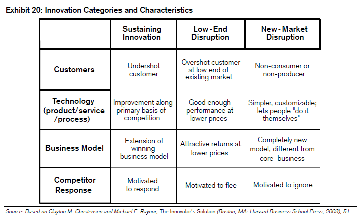
克里斯滕森研究的一个关键观点是，对于现有企业来说，忽略颠覆性创新似乎是完全合理的。原因在于，颠覆性创新产品的利润率通常低于现有产品，且在无足轻重或新兴市场销售，且与该公司最核心客户的需求不一致。因此，那些听从客户意见、遵守传统财务纪律的公司，往往会忽视颠覆性创新。
图20总结了克里斯滕森的三类创新：持续、低端和新市场，并考虑了他们服务的客户、他们用来吸引客户的技术、他们采用的商业模式，以及对每一种模式下预期现有企业的反应。现有企业的反应值得特别注意。如果一个新的竞争对手带来了持续的创新，现有企业就会有强烈的动机来捍卫自己的地盘。克里斯滕森表示，现有企业在这样的竞争中输给挑战者的情况非常罕见。
对于低端的颠覆，现有企业的反应通常是逃离。这就是综合性钢铁厂所做的。在短期内，离开有助于提高利润率，因为它鼓励企业专注于市场上最有利可图的部分。从长远来看，它为颠覆者提供了资源，使其能够以成本效益为基础，渗透主流市场。
现有企业通常都满足于忽视新市场颠覆性创新。晶体管收音机的例子说明了其中的原因。由于便携式收音机并没有影响台式收音机的客户群，现有企业选择了漠视新产品。
克里斯滕森在理解和预测一个行业可能从纵向整合转为横向整合的方面也做了富有见地的工作。这个框架与评估外包的优点有关。虽然外包给一部分公司带来了巨大的好处，包括更低的资本成本和更快产品交付时间，但它也给那些在错误情况下试图外包的公司带来了困难。
纵向整合的公司在行业发展中占据主导地位，因为协调的成本太高。以1980年的计算机行业为例。（见图21）大多数计算机公司都是纵向整合的，以确保他们的产品能够使用。
但随着行业的发展，各种零部件变成了模块。模块化的过程允许一个行业从纵向朝横向转变。20世纪90年代中期，计算机行业就出现了这种情况。从工程角度来看，模块化允许标准化和现成产品的组装，并不简单。
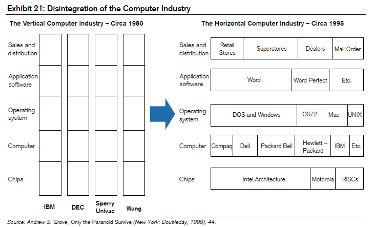
波音787梦幻客机的磨难是一个警示，提醒人们过早外包可能带来的危险。在历史上，波音公司采用了一种被称为“制造-打印”的工艺，即公司内部完成飞机的所有设计，并向供应商提供非常具体的制造指示。对于787，波音公司决定将飞机各个部分的设计和建造外包出去，目的是降低成本和加快组装时间。
这个过程一团糟。第一架飞机原本是由1200个零部件组成，但最终却变成了3万个。波音公司不得不花费大量的金钱和时间把设计的大部分重新放回公司内部。波音公司没有意识到外包对于需要复杂的不同零部件集成的产品没有意义。协调成本实在太高了。